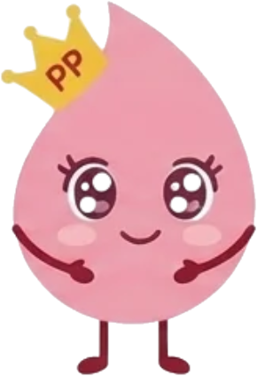
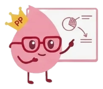
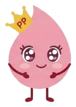
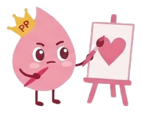
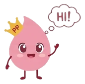
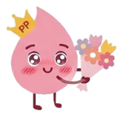
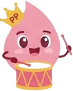
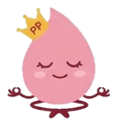
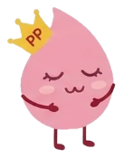
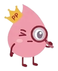

Kiêu hãnh đón “kỳ”,
tự tin con gái
P-Proud là người bạn đồng hành giúp nữ sinh lớp 6–7 hiểu đúng về kinh nguyệt và tuổi dậy thì, tự tin chăm sóc bản thân và biết tìm sự hỗ trợ khi cần.

Ba chữ P của chúng mình
Mỗi nội dung trên P-Proud đều xoay quanh ba trụ cột giúp bạn hiểu cơ thể mình và tự tin hơn mỗi ngày.

Hiểu về kinh nguyệt
Chu kỳ là gì, vì sao có kinh, chăm sóc bản thân trong những ngày “đèn đỏ” ra sao.

Lớn lên tự tin
Những thay đổi của cơ thể và cảm xúc ở tuổi dậy thì đều là điều bình thường.

Tôn trọng lẫn nhau
Bạn nam và bạn nữ cùng hiểu đúng để không còn trêu chọc hay xấu hổ.
Bài viết mới
Xem tất cảĐồng hành cùng P-Proud
Nhà tài trợ và đối tác dự kiến của dự án

Xin chào, đây là P-Proud!
P-Proud là dự án giáo dục sức khỏe kinh nguyệt do 6 sinh viên UEH thực hiện, dành cho 120 nữ sinh lớp 6–7 tại một trường THCS ở Quận 8, TP.HCM. Chúng mình tin rằng có kinh là một phần bình thường và đáng tự hào của việc lớn lên.
Tầm nhìn
Mỗi bạn nữ đều bước vào tuổi dậy thì với đủ hiểu biết, sự tự tin và một môi trường học đường tôn trọng, không còn kỳ thị kinh nguyệt.
Sứ mệnh
Mang kiến thức kinh nguyệt chính xác, phù hợp lứa tuổi đến học sinh qua website, bài học trực tiếp và bộ công cụ mà nhà trường có thể dùng lại lâu dài.
Hoạt động của dự án
Dự án kéo dài 23 tuần, chia thành 5 giai đoạn.
Khởi động và kết nối
Lập kế hoạch, làm việc với nhà trường và nhà tài trợ.
Website và tài liệu
Xây dựng website, soạn bài học, in cẩm nang và poster.
Chuẩn bị và thử nghiệm
Mua vật dụng, chạy thử với nhóm nhỏ và hoàn thiện.
Triển khai tại trường
6 bài học, trò chơi, trao bộ vật dụng vệ sinh.
Đánh giá và bàn giao
Đo kết quả, tập huấn giáo viên, bàn giao cho nhà trường.
Đội ngũ P-Proud
Các bên đồng hành
🏫 Nhà trường
- Trường THCS đối tác tại Quận 8, TP.HCM
- Ban giám hiệu, giáo viên chủ nhiệm và nhân viên y tế trường
🩺 Hội đồng chuyên môn
- Bác sĩ Sản phụ khoa, ĐH Y Dược TP.HCM
- Chuyên gia tâm lý giáo dục
- Giáo viên Sinh học THCS
- Đại diện Hội Liên hiệp Phụ nữ
🤝 Nhà tài trợ dự kiến
- Dạ Hương – Dược phẩm Hoa Linh
- Diana Unicharm Việt Nam
- Kao Việt Nam – Laurier
- TELOS (hỗ trợ thiết kế website)
Bộ công cụ P-Proud
Tài liệu được soạn cùng hội đồng chuyên môn, phù hợp với học sinh 11–13 tuổi. Thầy cô và phụ huynh có thể dùng lại mỗi năm học.
6 bài học trực tuyến
Học theo thứ tự hoặc chọn bài bạn quan tâm. Cuối mỗi bài có một quiz nhỏ.

Cộng đồng P-Proud
Nơi học sinh, thầy cô, phụ huynh và nhà tài trợ cùng lan tỏa thông điệp “kiêu hãnh đón kỳ”.
Hoạt động nổi bật
Lớp học P-Proud
6 buổi học tương tác tại trường, kết hợp thảo luận, trò chơi và quiz.

Gian hàng Myth hay Fact
Học sinh cùng nhau “bóc mẽ” những hiểu lầm quen thuộc về kinh nguyệt.

Góc nữ sinh tại phòng y tế
Tủ băng vệ sinh, sách và poster ở lại trường để hỗ trợ các khóa sau.
Trở thành Đại sứ P-Proud
Bạn muốn lan tỏa thông điệp đến bạn bè? Để lại thông tin, nhóm sẽ liên hệ qua thầy cô chủ nhiệm.
Không cần nhập họ tên thật hay số điện thoại.
Cảm ơn nhà tài trợ
P-Proud trân trọng sự đồng hành của các nhà tài trợ dự kiến đã cùng chung tay vì sức khỏe nữ sinh.

Góc đọc của PiPi
Bài viết ngắn, dễ hiểu về kinh nguyệt, tuổi dậy thì, chăm sóc bản thân và bình đẳng giới.

Diễn đàn hỏi đáp
Hỏi điều bạn còn ngại hỏi. Bạn có thể đăng ẩn danh, câu trả lời có vương miện vàng đến từ chuyên gia.
Vừa chơi vừa học
Thu thập điểm vương miện qua ba trò chơi. Điểm của bạn được cộng dồn trong lần truy cập này.